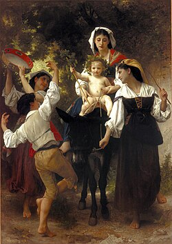

Literature
Ron English & Morgan Spurlock, Abject Expressionism: The Art of Ron English (San Francisco: Last Gasp, 2007), p. 188. ISBN 978-0867196894.

“Ron English”, Blag Magazine; Sarah J. Edwards, vol. 3, no. 2009, 2009, p. 57.

Silke Tudor, “Bullets Make Better Punctuation Marks”, Hi Fructose Magazine, vol. 16, 2010.

Notes
Also known as The Kissening.
The painting also references members of the band KISS in their signature makeup.
This composition was later adapted by the artist as a limited-edition print in the Vinyl Chord: A Revolutionary Record Store series.
Ancillary Documentation





Additional Online Circulation
Provenance
Private collection.